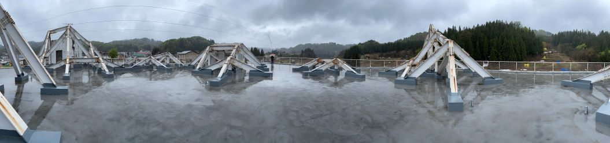
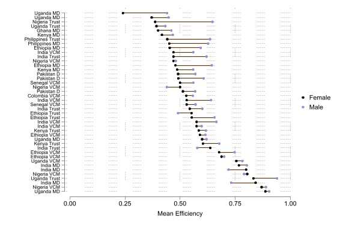
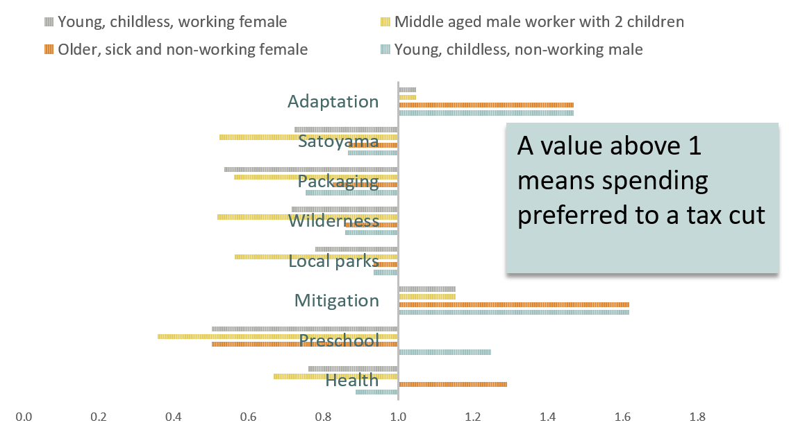
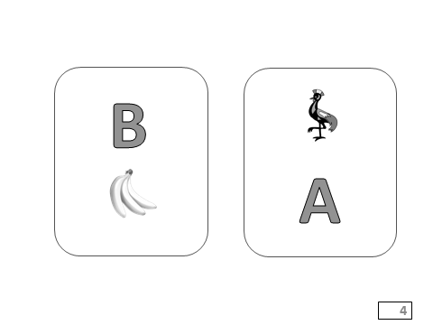

My research centres around experimental economics, behavioural and environmental and I often work on issues connected to development policy.
Three thumbnails of ongoing projects are given below.
More comprehensive details on grants, publications and collaborators are available from the links below.

Behavioural economics has transformed our picture of individual decision-making. Is the household also behavioural?

Mean cooperation between spouses is significantly less than 100% in most intra-household experiments.
Ageing Japan and the Environment
Japan is at the forefront of ageing in the industrialized economics. Its population is dropping by several hundred thousand
people each year.

Broadly speaking, a declining populations makes it easier to attain carbon emission targets.
What are the other implications of Japan's ageing population for its environmental policy?
Epistemologically, the central idea is that a more useful understanding of the beliefs and
preferences elements of individuals and groups can be obtained by conducting controlled interventions
with non-students away from the typical campus laboratory.

Working with a sample of smallholder farmers from rural Uganda and using established ideas on contingency from social psychology, we
investigate experimentally whether performance in an unrelated task has spillover effects for effort in a new task.